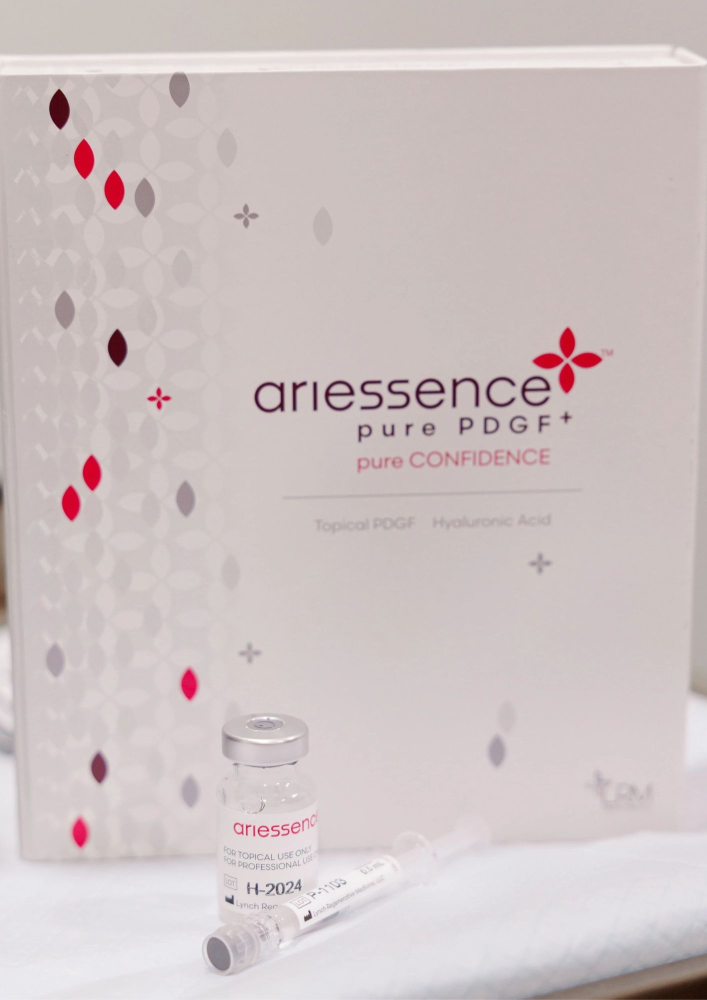

The add-on question comes up at almost every aesthetic appointment now. Would you like PRP with that? Exosomes? A growth factor serum to take home? PDGF, short for platelet derived growth factor, sits at the center of a lot of those offers, and I wanted to understand what the research says before spending more money on it.
What I found is more nuanced than the treatment menu suggests. One version of this idea has solid controlled data behind it. A second version has a handful of small studies. And the most popular version, pressing a non-sterile product into freshly opened skin, carries a risk that I had never heard mentioned by anyone selling it to me.
What PDGF is, in plain language.
PDGF is one of the first signals your body sends when skin is injured. Platelets release it at the wound, where it calls in fibroblasts, helps them multiply, and supports new blood vessel growth. Fibroblasts are the cells that make collagen, which is why PDGF gets so much attention in anti-aging conversations.
It is not a fringe ingredient. A lab made version called becaplermin (sold as Regranex) has been FDA approved since 1997 for diabetic foot ulcers, and it remains the only FDA approved topical growth factor. That approval is for deep, chronic wounds under a doctor's care, and for years the label carried a boxed warning about cancer risk with heavy use. I find that a useful reminder that growth factors are biologically active molecules, not moisturizers with a scientific sounding name.
Why people apply it after a procedure.
The logic is simple. Intact skin keeps out large molecules, and growth factors are large. Microneedling and fractional lasers create thousands of tiny channels through that barrier, so for a short window, whatever you apply can travel deeper. At the same time, the procedure has started a wound healing response, and PDGF is part of that response. The pitch is that adding more of it speeds healing and boosts collagen.
The catch is that the same open channels that let a growth factor in also let in preservatives, fragrance, bacteria, and anything else in the bottle. That tradeoff runs through the rest of this article.
Three very different things get called "growth factors after microneedling."
When a provider or a brand uses that phrase, they usually mean one of three things, and the differences in source, sterility, and evidence are large.
| Option | What it is | Where it happens | Evidence after procedures |
|---|---|---|---|
| PRP | Your own blood, spun down to concentrate platelets and their growth factors, including PDGF | In office, prepared fresh and handled sterile | Strongest: a meta-analysis of 14 controlled studies in acne scars |
| Growth factor serums | Lab made or cell culture derived growth factors in a cosmetic base | At home, usually days after the procedure | Thin: small split face trials, mostly after laser |
| Platelet extract and exosomes | Vesicles and signaling proteins from donor platelets or other cells | In office add-on or at home | Early: small, often company funded studies, and no FDA approved exosome product |
PRP comes from your own body and is prepared for that session. Serums and exosome vials are cosmetics, made to be applied to intact skin. Keep that distinction in mind as you read the research below.
What the studies show.
PRP with microneedling has the best evidence.
A 2022 meta-analysis in Frontiers in Medicine pooled 4 randomized and 10 split face studies covering 472 patients with acne scars. Adding PRP to microneedling roughly tripled the odds of more than 50% improvement compared with microneedling alone, and patients were more satisfied. Rates of severe redness and swelling were no different between the two groups.
Two caveats are worth knowing. Most of the included studies are small, and they are about acne scars, not wrinkles or general rejuvenation. PRP for overall anti-aging is plausible, but it is less proven.
Topical growth factors after laser: small but interesting.
Most of the post-laser research uses EGF (epidermal growth factor), a cousin of PDGF, rather than PDGF itself. In one split face trial of 21 acne scar patients, topical EGF used for a week after each fractional CO2 session improved scar appearance and seemed to reduce post-laser pigmentation, with no safety problems. A second split face trial that compared EGF ointment with plain petrolatum after a single laser session found the benefit for fresh wounds less clear, and the authors called for more study.
One more study surprised me. A well known antioxidant serum (15% vitamin C, vitamin E, and ferulic acid) sped healing after fractional CO2 laser in a small randomized trial, and it appeared to work partly by raising the skin's own growth factor levels. That study was done under medical supervision, which becomes important in the safety section.
Platelet extract and exosome serums are early.
The best known research here comes from Mayo Clinic on human platelet extract, the ingredient in Plated. After 12 weeks of twice daily use on intact skin, 87% of participants reported improvement, and biopsies showed new collagen and elastin. On the hands, it performed about as well as a vitamin C serum. Rion Aesthetics, the company behind Plated, funded at least some of this work, and several authors have financial ties to it. These studies also tested platelet extract as a daily serum, not as something pressed into freshly needled skin.
For exosomes applied directly after microneedling, I could not find a verified randomized trial of that specific protocol. It is an extrapolation from other data.
PDGF vs PDRN: not the same thing.
These two get confused constantly, partly because the letters look alike and partly because both are sold as post-procedure boosters.
- PDGF is a growth factor protein from platelets. It tells repair cells to show up and multiply.
- PDRN (polydeoxyribonucleotide) is purified DNA fragments, usually from salmon. It is the ingredient behind "salmon DNA" skin boosters like Rejuran and a wave of K-beauty serums.
PDRN has some randomized trials behind it for rejuvenation and wound healing, but a review of 16 clinical trials presented at IMCAS concluded that most of the evidence sits in the lower tiers, and no PDRN injectable is FDA approved for aesthetic use. Like PDGF, it is promising and oversold at the same time.
The safety issue most articles skip.
The biggest risk in this category is not the growth factor itself. It is what else gets pushed into open skin along with it.
Granulomas. In 2014, JAMA Dermatology described three women who developed facial granulomas, which are stubborn inflammatory bumps, after microneedling. Two of them had a vitamin C serum applied during the procedure, and the first round of steroid treatment did not clear it. A 2025 systematic review in Dermatologic Surgery found 15 such cases, most linked to motorized pens and topical vitamin C, and noted that these reactions can resist treatment. They are rare, but they explain why a product that is perfectly fine on intact skin can become a problem on needled skin.
The FDA's position. The FDA has not cleared any microneedling device for use together with another product, which means the safety of those combinations has not been reviewed. It also has not cleared any microneedling device for over the counter use.
Exosomes specifically. The FDA states that there are no approved exosome products, and it has warned about serious adverse events in patients treated with unapproved ones. Vials labeled "cosmetic use only" sit in a gray zone when they are applied to open channels.
Do not apply serums, oils, or actives to skin you have just needled yourself. Dermatology case reports advise avoiding vitamin C, vitamin E, retinoids, acids, fragrance, and oil based serums for at least 48 hours afterward. If you notice firm bumps or nodules weeks later that do not behave like normal breakouts, or warmth, spreading redness, or pus in the first days, see a dermatologist rather than waiting it out.
What to ask your provider.
If you are offered a growth factor or exosome add-on, these are the questions I would ask before saying yes.
- Is this my own PRP, or a manufactured product?
- If it is manufactured, is it sterile and labeled for use on open skin, or is it a cosmetic?
- What is the source: human platelets, stem cells, animal, or plant?
- What evidence supports using it right after this specific procedure?
- What does it add to the cost, and what results should I expect without it?
A careful provider will be able to answer all five without getting defensive.
Where growth factor serums fit, and three worth knowing.
The safest place for a growth factor or platelet extract serum is in your routine once your skin has closed, not in the treatment room on open channels. That is also how the better studies tested them: as a daily serum on intact skin.
For the first day or two after a procedure, follow your provider's aftercare exactly, which usually means a gentle cleanser, a plain fragrance free moisturizer, and mineral sunscreen. Once the redness settles and there is no open skin, a growth factor serum can come back in, ideally before other actives so you can tell if it irritates. From there it works best as maintenance between treatments, alongside the basics with the strongest evidence, sunscreen and a retinoid. My day by day microneedling aftercare guide walks through that first week in more detail.

None of these is pure PDGF, since no cosmetic is, but each has at least some published human research behind it. All three are for healed skin.
Plated Intense Serum
This one uses human platelet extract, so it is the closest match to the platelet signals discussed above, and it is the serum I have repurchased most. The Mayo Clinic studies found improvements in tone, redness, and new collagen over 12 weeks of daily use. Keep in mind that the company behind it funded much of that work. I compared it with INVO Aesthetics in my peptides, growth factors, and exosomes guide.
SkinMedica TNS Advanced+ Serum
This is the original growth factor serum, built on growth factors from cultured human fibroblasts. Its claims come from a company sponsored 24 week study of 45 adults aged 37 to 70. It is the priciest of the three at about $295, but it also has the longest track record in the category.
Shop SkinMedica TNS Advanced+ →
BIOEFFECT EGF Serum
BIOEFFECT grows its EGF in barley, and it has the most rigorous design of the three: a double blind split face study in which 30 women used the serum on one side and the same formula without EGF on the other, with wrinkle depth improving over eight weeks. An earlier three month study in the Journal of Drugs in Dermatology also found better texture and fewer visible fine lines.
Sources I read for this piece.
- Kang and Lu, microneedling with PRP for acne scars, meta-analysis (Frontiers in Medicine, 2022)
- Blume et al., becaplermin gel safety and efficacy (2014)
- Topical EGF with fractional CO2 laser for acne scars, split face trial (JCAD)
- EGF ointment after fractional ablative resurfacing, split face trial
- Waibel et al., vitamin C, E, and ferulic acid after fractional laser (Lasers in Surgery and Medicine, 2016)
- Wyles et al., topical human platelet extract and collagen (Journal of Drugs in Dermatology, 2024)
- Platelet extract vs vitamin C on the hands (HealthDay summary, 2024)
- Dobroshi, Salmon DNA: widely used, poorly proven? (IMCAS)
- Soltani-Arabshahi et al., facial granulomas after microneedling (JAMA Dermatology, 2014)
- Friedmann et al., granulomatous reactions from microneedling, systematic review (Dermatologic Surgery, 2025)
- FDA consumer update on microneedling devices
- Summary of FDA notices on exosome products